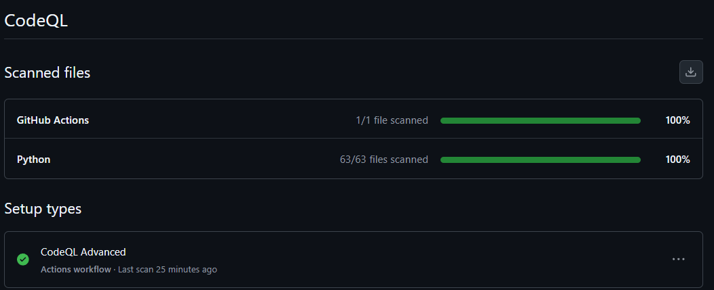
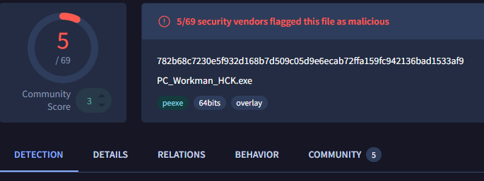
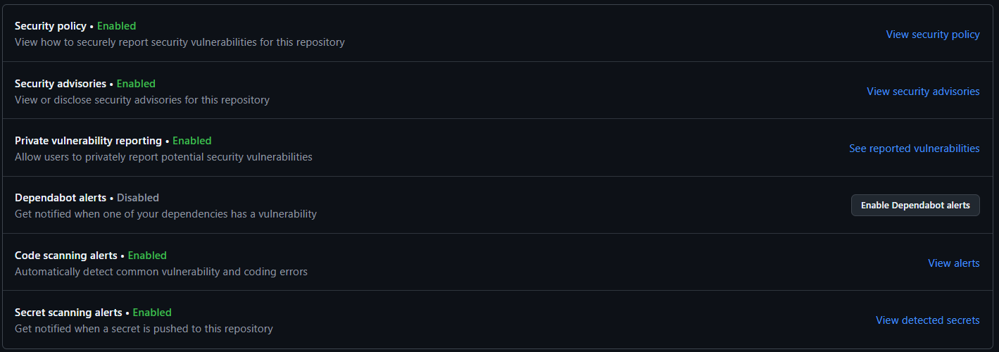
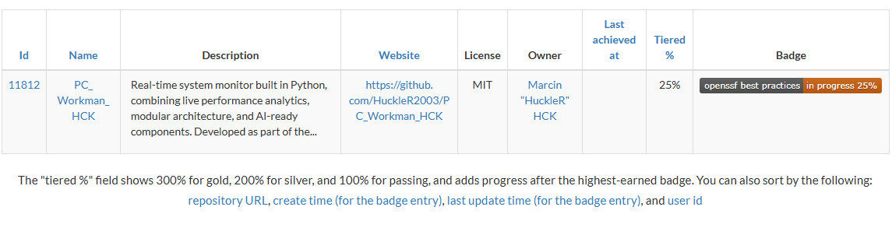

Security Policy
Security Policy
Last updated 26 June 2026 — version 1.5
PC Workman needs administrative privileges to read hardware sensors and control fan speeds. That level of access deserves rigorous, verifiable security. This page summarises how every release is protected and how you can verify it yourself — you don't have to take my word for any of it. The full policy lives in SECURITY.md.




How every release is protected
- Sigstore digital signatures — cryptographic proof that a release is authentic, active since January 20, 2026.
- VirusTotal scanning — every
.exeis checked against 70+ antivirus engines before release (currently 0/70). - CodeQL — automated security scanning on every commit to
main. - Private vulnerability reporting + Dependabot alerts on GitHub.
- Documented testing — version, date and results recorded publicly; source tagged and archived per release.
Verify it yourself
Before running any release, you can confirm it is authentic and clean:
1. Verify the Sigstore signature
sigstore verify github \
PC_Workman_HCK_<version>.exe \
--bundle sigstore.bundleIf verification fails, do not run the file — report it.
2. Check the SHA256 hash against the value in the release notes
Get-FileHash PC_Workman_HCK_<version>.exe -Algorithm SHA2563. Scan it on VirusTotal (expected: 0 detections) and read the source — every line is on GitHub.
Privacy & data
PC Workman is local-first: all system-monitoring data, learned baselines, the offline hck_GPT assistant and your history stay on your device. The only data that can leave is an optional, anonymous hardware & usage snapshot (component models, OS, region from your locale, app version, session length — never your name, IP, files or process names), used to fix hardware incompatibilities and controllable in Settings.
Full details: Privacy Policy (EN + PL) and PRIVACY.md.
Supported versions
| Version | Supported | Security updates |
|---|---|---|
| 1.8.0 (latest stable) | Yes | Best — current release |
| 1.7.x | Limited | Critical only — upgrade recommended |
| 1.6.x | Limited | Critical only — upgrade recommended |
| < 1.6 | No | End of life |
Reporting a vulnerability
Please report security issues privately, not in public issues:
- Preferred: GitHub → Security tab → "Report a vulnerability".
- Alternative: email
firmuga.marcin.s@gmail.comwith subject[SECURITY] PC Workman.
Response timeline: acknowledgment within 24 hours, validation and severity within 72 hours, a fix for critical issues (CVSS 7.0+) within 7 days. Reporters are credited unless anonymity is requested.
Status at a glance
| Measure | Status |
|---|---|
| Sigstore signatures | Active (since Jan 20, 2026) |
| VirusTotal | 0/70 clean — last scanned v1.8.0 (June 22, 2026) |
| CodeQL | Clean on every commit |
| OpenSSF Best Practices | In progress (~25%) |